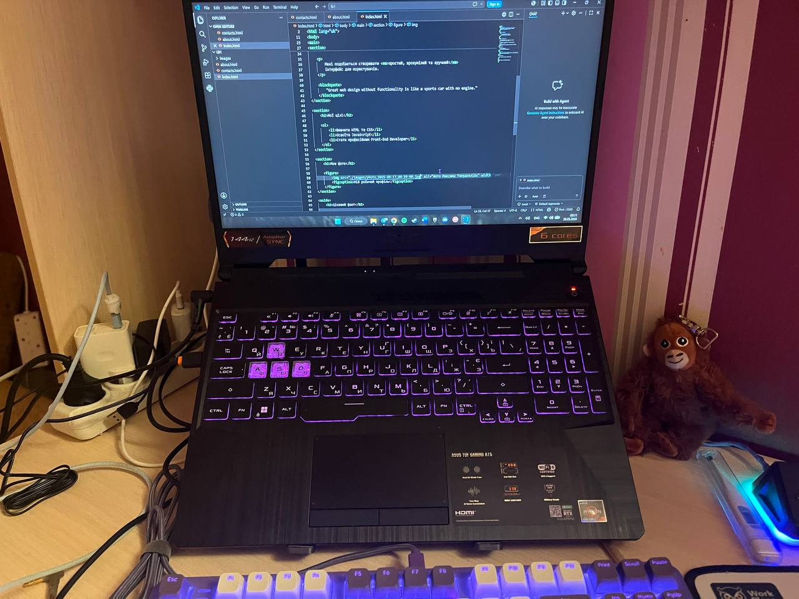

Освіта
Навчаюсь за напрямом інформаційних технологій та цікавлюсь веб-розробкою.
Також я цікавлюсь сучасним UI/UX дизайном та адаптивною версткою.
Мої якості
- Відповідальність
- Уважність до деталей
- Бажання навчатись
Навички
| Технологія | Рівень | Досвід |
|---|---|---|
| HTML | Початковий | 4 місяця |
| CSS | Початковий | 4 місяця |
| Git | Базовий | 1 тиждень |
| JavaScript | Початковий | 1 тиждень |
Факти про мене
- Улюблений напрям
- Front-End Development
- Улюблена технологія
- HTML5
- Мета
- Стати професійним веб-розробником
Моє робоче місце
